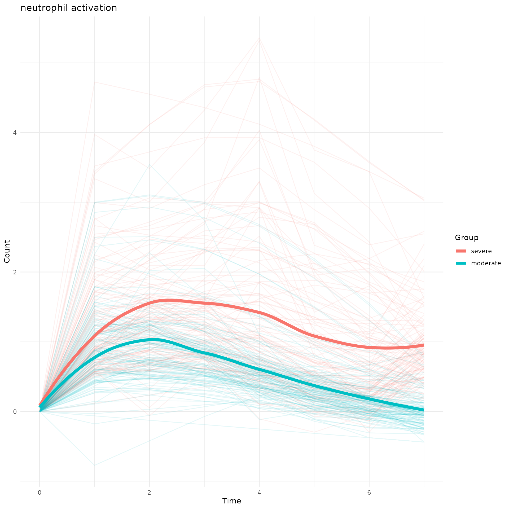
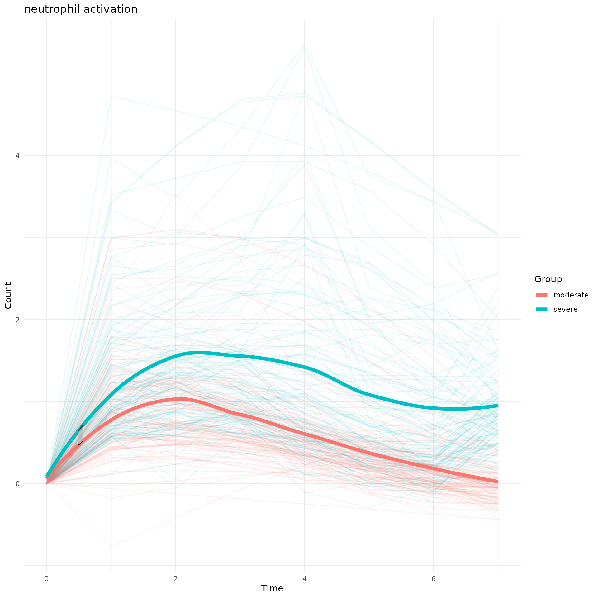

Compare-Curve-Permutation.Rmd
library(TrendCatcher)
severe.path<-system.file("extdata", "MasterListSevere.rda", package = "TrendCatcher")
load(severe.path)
moderate.path<-system.file("extdata", "MasterListModerate.rda", package = "TrendCatcher")
load(moderate.path)
ht.path<-system.file("extdata", "htSevere.rda", package = "TrendCatcher")
load(ht.path)
#head(ht.severe$GO.df)
head(ht.severe$GO.df)## ID Description t.name direction
## 1 GO:0006958 complement activation, classical pathway 0W-1W Activation
## 2 GO:0006958 complement activation, classical pathway 1W-2W Activation
## 3 GO:0006958 complement activation, classical pathway 2W-3W Deactivation
## 4 GO:0006958 complement activation, classical pathway 3W-4W Deactivation
## 5 GO:0006958 complement activation, classical pathway 4W-5W Deactivation
## 6 GO:0006958 complement activation, classical pathway 5W-6W Deactivation
## Avg_log2FC n_total n_background n_up n_down
## 1 2.1002689 77 141 77 0
## 2 0.6301674 32 141 32 0
## 3 -0.2587066 52 141 20 32
## 4 -0.3352649 62 141 16 46
## 5 -0.1453267 67 141 15 52
## 6 -0.5720138 68 141 0 68
## geneID_up
## 1 CLU/SERPING1/C1QB/CD55/CR1/IGKC/IGKV4-1/IGKV3D-20/IGKV3D-11/IGLV6-57/IGLV1-51/IGLV1-47/IGLV1-44/IGLV7-43/IGLV1-40/IGLV3-27/IGLV3-25/IGLV2-23/IGLV3-21/IGLV3-19/IGLV2-14/IGLV2-11/IGLV3-1/IGLC2/IGLC3/IGLC7/IGHA2/IGHG4/IGHG2/IGHA1/IGHG1/IGHG3/IGHV6-1/IGHV1-3/IGHV2-5/IGHV3-7/IGHV3-11/IGHV3-15/IGHV1-18/IGHV3-20/IGHV3-21/IGHV3-23/IGHV1-24/IGHV3-33/IGHV4-34/IGHV4-39/IGHV3-48/IGHV5-51/IGHV3-53/IGHV3-66/IGHV1-69/IGHV2-70D/IGLC6/IGHV4-59/IGHV3-74/IGHV3-72/IGHV4-31/IGKV2D-30/IGKV3-20/IGKV1D-33/IGKV1-17/IGKV1-16/IGKV1-39/IGKV2D-28/IGKV2-30/IGKV1-12/IGKV1-5/IGKV2-28/IGKV3-15/IGKV1D-39/IGHV3-30/IGHV2-70/IGHV4-4/IGLV2-8/IGKV1D-12/IGHV3-64D/IGHV5-10-1
## 2 CLU/SERPING1/CD55/CR1/IGKC/IGKV4-1/IGKV3D-20/IGLV3-27/IGLV3-25/IGLV2-14/IGLV2-11/IGLV3-1/IGHA2/IGHV6-1/IGHV3-7/IGHV3-15/IGHV1-18/IGHV3-23/IGHV1-24/IGHV3-48/IGHV2-70D/IGHV3-74/IGHV3-72/IGKV2D-30/IGKV3-20/IGKV2D-28/IGKV2-30/IGKV1-5/IGKV2-28/IGHV2-70/IGHV1-69D/IGHV3-64D
## 3 CLU/CD55/IGKC/IGKV4-1/IGKV3D-20/IGLV2-11/IGHA2/IGHV6-1/IGHV3-7/IGHV3-15/IGHV1-18/IGHV3-48/IGHV2-70D/IGHV3-74/IGHV3-72/IGKV2D-30/IGKV2D-28/IGKV2-30/IGKV1-5/IGHV3-64D
## 4 IGKV4-1/IGKV3D-20/TRBC2/IGHA2/IGHV6-1/IGHV3-7/IGHV3-15/IGHV1-18/IGHV3-48/IGHV3-74/IGHV3-72/IGKV2D-30/IGKV2D-28/IGKV2-30/IGKV1-5/IGHV3-64D
## 5 IGKV4-1/IGLV2-14/TRBC1/TRBC2/IGHA2/IGHV3-7/IGHV3-15/IGHV3-48/IGHV3-74/IGHV3-72/IGKV3-20/IGKV2D-28/IGKV1-5/IGKV2-28/IGHV3-64D
## 6
## geneID_down
## 1
## 2
## 3 SERPING1/C1QB/IGLV6-57/IGLV1-47/IGLV1-44/IGLV1-40/IGLV3-27/IGLV3-25/IGLV2-23/IGLV3-21/IGLV3-19/IGLV2-14/IGLC2/IGLC3/IGHG4/IGHG1/IGHG3/IGHV3-20/IGHV3-33/IGHV4-34/IGHV4-39/IGHV3-53/IGHV1-69/IGHV4-59/IGKV3-20/IGKV1D-33/IGKV1-16/IGKV1-39/IGKV1D-39/IGHV3-30/IGHV1-69D/IGHV5-10-1
## 4 CLU/SERPING1/C1QB/CR1/IGLV6-57/IGLV1-47/IGLV1-44/IGLV1-40/IGLV3-27/IGLV3-25/IGLV2-23/IGLV3-21/IGLV3-19/IGLV3-1/IGLC2/IGLC3/IGHG4/IGHG1/IGHG3/IGHV1-3/IGHV2-5/IGHV3-20/IGHV3-21/IGHV1-24/IGHV3-33/IGHV4-34/IGHV4-39/IGHV5-51/IGHV3-53/IGHV1-69/IGHV2-70D/IGHV4-59/IGHV4-31/IGKV3-20/IGKV1D-33/IGKV1-16/IGKV1-39/IGKV1-12/IGKV1D-39/IGHV3-30/IGHV2-70/IGHV4-4/IGLV2-8/IGKV1D-12/IGHV1-69D/IGHV5-10-1
## 5 CLU/SERPING1/C1QB/CR1/IGKV3D-11/IGLV6-57/IGLV1-47/IGLV1-44/IGLV1-40/IGLV3-27/IGLV3-25/IGLV2-23/IGLV3-21/IGLV3-19/IGLV3-1/IGLC2/IGLC3/IGHG4/IGHA1/IGHG1/IGHG3/IGHV1-3/IGHV2-5/IGHV3-11/IGHV3-20/IGHV3-21/IGHV1-24/IGHV3-33/IGHV4-34/IGHV4-39/IGHV5-51/IGHV3-53/IGHV3-66/IGHV1-69/IGHV2-70D/IGLC6/IGHV4-59/IGHV4-31/IGKV1D-33/IGKV1-17/IGKV1-16/IGKV1-39/IGKV1-12/IGKV3-15/IGKV1D-39/IGHV3-30/IGHV2-70/IGHV4-4/IGLV2-8/IGKV1D-12/IGHV1-69D/IGHV5-10-1
## 6 SERPING1/C1QB/CR1/IGKC/IGKV3D-20/IGKV3D-11/IGLV6-57/IGLV1-51/IGLV1-47/IGLV1-44/IGLV7-43/IGLV1-40/IGLV3-27/IGLV3-25/IGLV2-23/IGLV3-21/IGLV3-19/IGLV2-14/IGLV2-11/IGLV3-1/IGLC2/IGLC3/IGLC7/IGHG4/IGHA1/IGHG1/IGHG3/IGHV1-3/IGHV2-5/IGHV3-11/IGHV1-18/IGHV3-20/IGHV3-21/IGHV3-23/IGHV1-24/IGHV3-33/IGHV4-34/IGHV4-39/IGHV3-48/IGHV5-51/IGHV3-53/IGHV3-66/IGHV1-69/IGHV2-70D/IGLC6/IGHV4-59/IGHV3-74/IGHV4-31/IGKV2D-30/IGKV3-20/IGKV1D-33/IGKV1-17/IGKV1-16/IGKV1-39/IGKV2D-28/IGKV2-30/IGKV1-12/IGKV1-5/IGKV2-28/IGKV3-15/IGKV1D-39/IGHV3-30/IGHV2-70/IGHV4-4/IGLV2-8/IGKV1D-12/IGHV1-69D/IGHV5-10-1
## p.adjust.up p.adjust.down
## 1 6.67222905253988e-72
## 2 2.19506922004502e-18
## 3 1.63402445206667e-08 9.9477266204752e-33
## 4 2.74522759489778e-05 7.55610755399035e-46
## 5 2.69045301915842e-05 3.3223517232817e-48
## 6 6.7007249596023e-69## ID Description p.adjust GeneRatio
## 0W-1W.GO:0042119 GO:0042119 neutrophil activation 3.063434e-07 12/644
## 1W-2W.GO:0042119 GO:0042119 neutrophil activation 4.321727e-07 11/503
## 3W-4W.GO:0042119 GO:0042119 neutrophil activation 5.329931e-03 5/282
## 4W-5W.GO:0042119 GO:0042119 neutrophil activation 4.305079e-05 8/386
## 5W-6W.GO:0042119 GO:0042119 neutrophil activation 1.237944e-07 11/458
## 6W-7W.GO:0042119 GO:0042119 neutrophil activation 1.786931e-04 8/452
## BgRatio
## 0W-1W.GO:0042119 41/18800
## 1W-2W.GO:0042119 41/18800
## 3W-4W.GO:0042119 41/18800
## 4W-5W.GO:0042119 41/18800
## 5W-6W.GO:0042119 41/18800
## 6W-7W.GO:0042119 41/18800
## geneID
## 0W-1W.GO:0042119 TYROBP/GRN/SPI1/CTSG/PRAM1/ANXA3/FCER1G/PRKCD/CAMP/ITGAM/MYD88/CD177
## 1W-2W.GO:0042119 TYROBP/GRN/SPI1/CTSG/ANXA1/ANXA3/PRKCD/CAMP/CD300A/ITGAM/MYD88
## 3W-4W.GO:0042119 GRN/SPI1/CD300A/MYD88/CD177
## 4W-5W.GO:0042119 SPI1/CTSG/FCER1G/PRKCD/CD300A/ITGAM/MYD88/CD177
## 5W-6W.GO:0042119 SPI1/CTSG/PRAM1/ANXA3/FCER1G/PRKCD/CAMP/CD300A/ITGAM/MYD88/CD177
## 6W-7W.GO:0042119 SPI1/CTSG/PRAM1/ANXA3/CAMP/CD300A/ITGAM/CD177
## t.name type
## 0W-1W.GO:0042119 0W-1W Activation
## 1W-2W.GO:0042119 1W-2W Activation
## 3W-4W.GO:0042119 3W-4W Deactivation
## 4W-5W.GO:0042119 4W-5W Deactivation
## 5W-6W.GO:0042119 5W-6W Deactivation
## 6W-7W.GO:0042119 6W-7W DeactivationTo show the DDEGs from severe group which were enriched for neutrophil activation pathway, and how their temporal behavior differs between moderate and severe group. We applied LOESS smoothing curve fitting method.
g<-draw_CurveComp(master.list.1 = master.list.severe, master.list.2 = master.list.moderate, ht.1 = ht.severe, pathway = "neutrophil activation",group.1.name = "severe", group.2.name = "moderate")## Found 117 DDEGs from neutrophil activation
print(g)
To quantify which time interval these two group separate, we applied permutation test and marked the significant separation time in grey.
perm_output<-draw_CurveComp_Perm(master.list.1 = master.list.severe,
master.list.2 = master.list.moderate,
ht.1 = ht.severe,
pathway = "neutrophil activation",
group.1.name = "severe",
group.2.name = "moderate",
n.perm = 100,
parall = FALSE,
pvalue.threshold = 0.05)
names(perm_output)## [1] "adjusted.pvalue.area" "perm" "st"
## [4] "en" "plot"
perm_output$plot